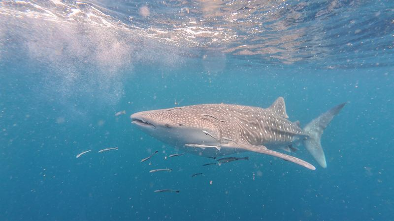
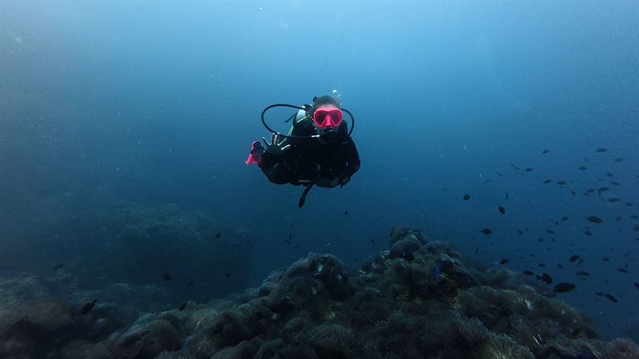
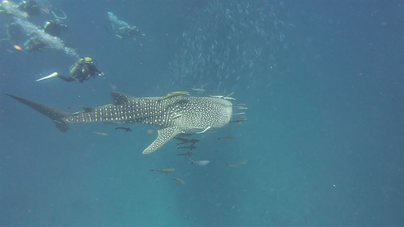

Das Plankton nimmt zu
Grüneres Wasser und eine Sicht von etwa 5–10 m, aber viel Nahrung darin. Im Februar hatten wir tolle Begegnungen.

Start / Tauchplätze / Walhaie
Der größte Fisch im Meer besucht Sail Rock, eine Stunde mit dem Boot von unserem Pier in Chaloklum. Hier erfährst du, wann sie kommen, warum sie kommen und wie du deine Chancen erhöhst, das Wasser mit einem zu teilen.

Sail Rock · ein Besucher aus dem offenen Meer
Das Tier · Rhincodon typus
Trotz seines Namens ist der Walhai ein Fisch — der größte lebende Fisch. Er ernährt sich, indem er Plankton und winzige Fische aus dem Wasser filtert, interessiert sich nicht für Menschen und bewegt sich so langsam, dass du eine Weile neben ihm herschwimmen kannst.
Jeder Walhai hat sein eigenes Muster aus weißen Flecken, so einzigartig wie ein Fingerabdruck. Die Art gilt als stark gefährdet — ein Grund mehr, jede Begegnung mit Respekt zu behandeln.
Wann hinfahren
Walhaie folgen dem Plankton. Von Januar bis April ist das Wasser um Sail Rock voll davon, die großen Fischschwärme fressen es, und die Walhaie kommen hinterher. Aber sie haben ihren eigenen Kalender.
Grüneres Wasser und eine Sicht von etwa 5–10 m, aber viel Nahrung darin. Im Februar hatten wir tolle Begegnungen.
Die Monate mit den besten Chancen, während das Wasser klarer wird. Wenn Walhaie dein Ziel sind, komm jetzt.
Sail Rock in seiner klarsten Zeit. Sichtungen sind seltener, aber es gibt sie — der September hat uns einige unserer besten beschert.
An manchen Tagen raue See. Wenn es nicht sicher ist, bleibt das Boot im Hafen, und du bekommst dein Geld vollständig zurück.
Bleib realistisch: Die Chance, an einem bestimmten Tag einen zu sehen, ist gering. Niemand füttert oder lockt hier Walhaie an — jede Begegnung ist völlig natürlich, und genau das macht sie so besonders. Und Sail Rock mit seinen Barrakudas, Fledermausfischen und Stachelmakrelen ist an jedem Tag ein großartiger Tauchgang.
So siehst du einen
Walhaie fressen genauso oft nahe der Oberfläche wie in der Tiefe, du musst also kein erfahrener Taucher sein. Je mehr Tage du an Sail Rock verbringst, desto besser deine Chancen.

Zwei Tauchgänge an Sail Rock mit maximal vier Tauchern pro Guide, der weiß, wo man suchen muss.
1 Tag3,200฿
Details
Deine Freiwassertauchgänge finden an Sail Rock statt, du könntest deinem ersten Walhai also schon begegnen, während du noch lernst.
3 Tage12,900฿
Details
Komm auf demselben Boot mit und schnorchle an Sail Rock. Wenn ein Walhai nahe der Oberfläche frisst, haben Schnorchler die beste Sicht.
1 Tag1,500฿
Details
Lass ihm Platz
Im Wasser
Ein entspannter Walhai bleibt länger. Diese Regeln erklären wir auf dem Boot, für Taucher und Schnorchler gleichermaßen.
Fragen
Die klassische Saison an Sail Rock ist April bis Juni. Walhaie haben aber ihren eigenen Kalender: Wir hatten auch im Februar und September tolle Begegnungen, und eine Sichtung ist auch zu anderen Zeiten im Jahr möglich.
An Sail Rock, der Felsspitze im offenen Meer zwischen Koh Phangan und Koh Tao. Es ist der beste Ort in diesem Teil des Golfs von Thailand, um ihnen zu begegnen, etwa eine Stunde mit dem Boot ab Chaloklum.
Nein, und die Chance an einem einzelnen Tag ist gering. Niemand füttert oder lockt hier Walhaie an: Sie kommen und gehen auf natürliche Weise mit dem Plankton, und genau das macht jede Begegnung so besonders. Am besten erhöhst du deine Chancen, wenn du in der Saison an mehreren Tagen an Sail Rock tauchst.
Nein. Walhaie fressen Plankton und kleine Fische und sind für Menschen harmlos. Das einzige echte Risiko besteht für den Walhai — deshalb bitten wir alle, Abstand zu halten und ihn nie anzufassen.
Ja. Walhaie fressen oft nahe der Oberfläche, und einige unserer spektakulärsten Sichtungen hatten wir beim Schnorcheln. Schnorchler können für 1.500฿ auf unserem Boot nach Sail Rock mitfahren.
Nein. Walhaie schwimmen in jeder Tiefe und oft nahe der Oberfläche, Open-Water-Schüler und Schnorchler haben also genauso gute Chancen wie erfahrene Taucher. Entscheidend ist, am richtigen Tag im Wasser zu sein.
Miete eine Unterwasserkamera für 600฿, oder dein Instructor filmt deinen Tauchgang für 800฿ — und wenn ein Walhai vorbeikommt, nimmst du ihn mit nach Hause. Bitte denk daran: kein Blitz.
Schick uns deine Daten auf WhatsApp. Wir sagen dir ehrlich, was an Sail Rock zuletzt gesichtet wurde und welche Tage am besten aussehen.
Mehr dazu in unserem Sail-Rock-Tauchguide.